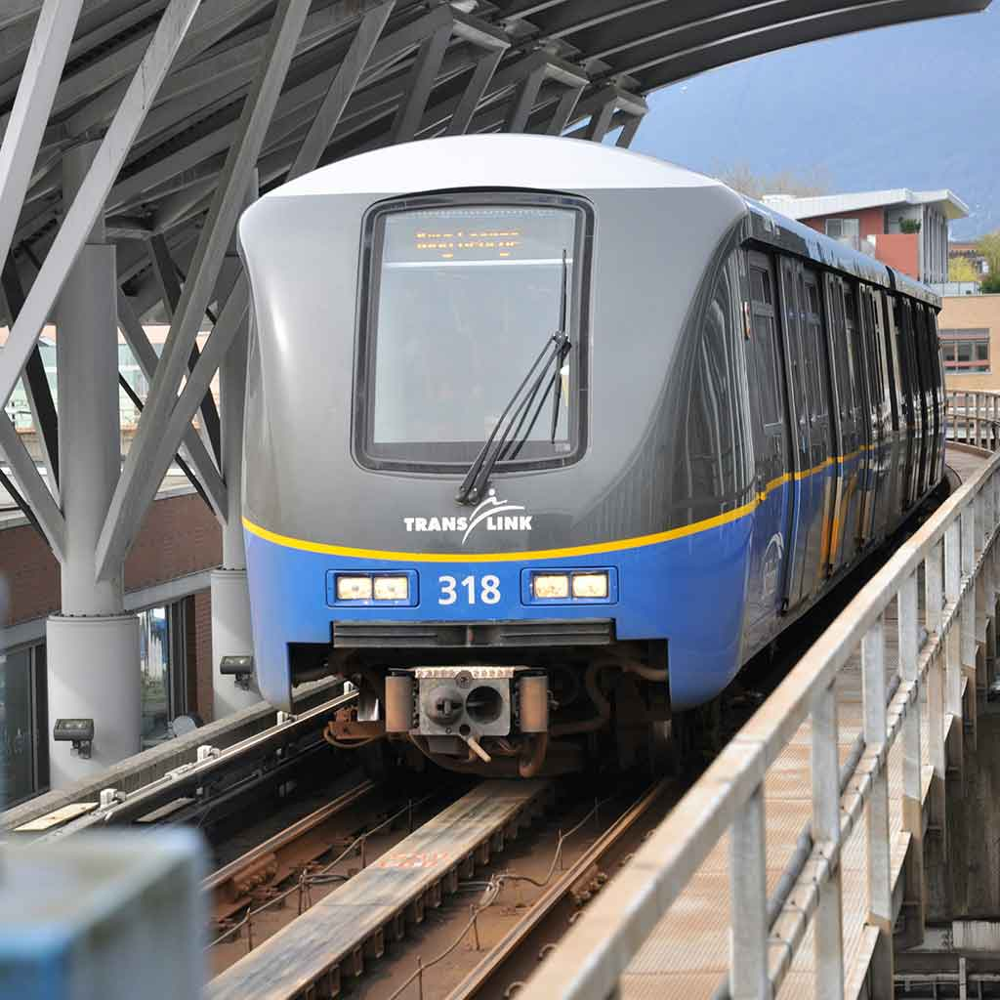
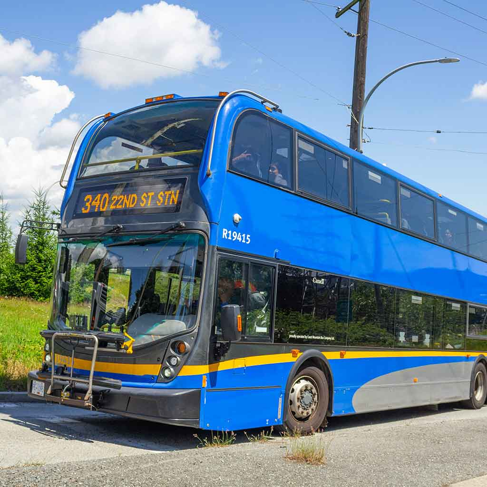
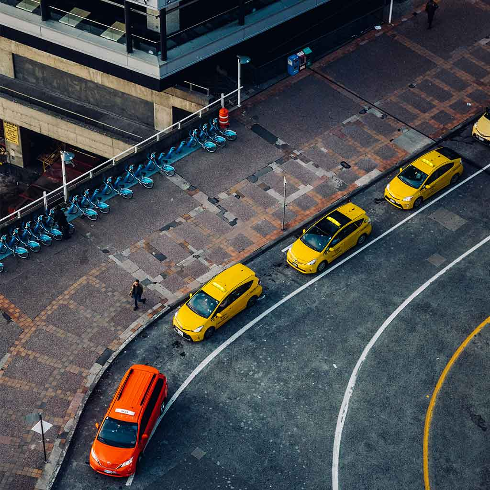

Skytrain
SkyTrain is the medium-capacity rapid transit system serving the Metro Vancouver region in British Columbia, Canada.SkyTrain has 79.6 km (49.5 mi) of track and uses fully automated trains on grade-separated tracks running on underground and elevated guideways, allowing SkyTrain to hold consistently high on-time reliability. In 2024, the system had an annual ridership of 149,066,500, or about 456,300 per weekday as of the second quarter of 2025, making it the 7th busiest metro system in North America and the 5th busiest in Canada and the US.

Bus
Bus service operates throughout most of the region under a subsidiary of TransLink, known as Coast Mountain Bus Company. TransLink was established by the provincial government as a way to divorce itself from the responsibilities of roads, bridges and transit service. Ultimately the provincial government retains responsibility for funding of all projects under the aegis of TransLink. Service in West Vancouver and Lions Bay is contracted through West Vancouver Blue Bus.

Taxi
Several private taxicab companies operate 24-hour service in Vancouver, including Yellow Cabs, Vancouver Taxi, Black Top Cabs, and MacLure's Cabs. Taxis and drivers are regulated by the city and, as of 2006, 477 licensed cabs operated in the city, including 59 wheelchair-accessible vehicles. As of 2009, a taxi ride to or from Vancouver International Airport costs approximately $30 to $32. Cabs in Vancouver are powered by gasoline, natural gas, and electricity. There is also a pedicab company operating in downtown Vancouver called Tikki Tikki pedicabs, usually operating on Thursday, Friday and Saturday nights.